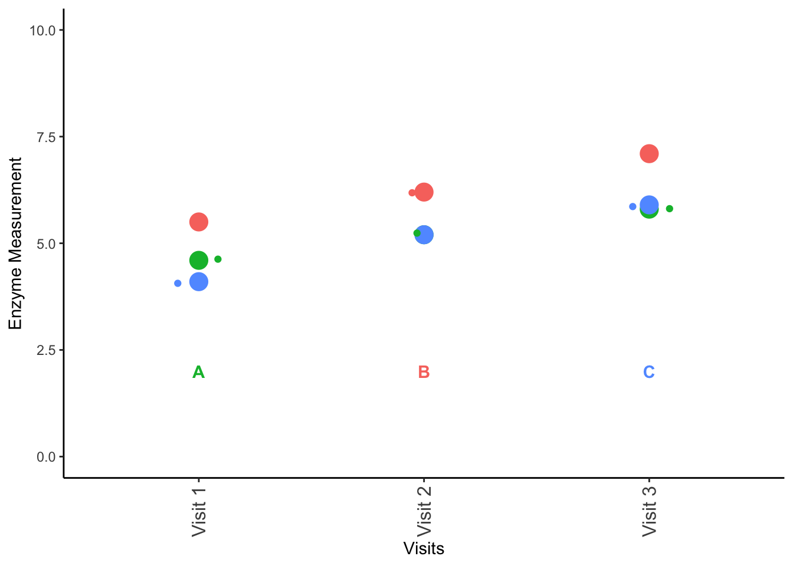

library(agricolae)
library(plyr)
library(tidyverse)
# NEW PACKAGES NEEDED
library(multcomp)
library(nlme)10 ANOVA: Part 2
10.1 Two-way ANOVA
Previously, we discussed one-way ANOVAs, where we are looking at a single factor split across three or more groups and trying to determine if the means of these groups are equal (i.e., \(H_0: \mu_1=\mu_2=...\mu_i\)). ANOVA specifically allows us to analyze the variance of these different groups to ascertain which factors are most responsible for the variation we observe in the data. Because of the way ANOVA operates, we can actually test multiple different combinations of variables simultaneously in what we call a two-way ANOVA.
Don’t forget to load your required packages - some we have used before, like agricolae, plyr, and tidyverse, but others are new for this section: multcomp and nlme! As a reminder, these packages are designed for the following:
agricolae: originally written as a Master’s thesis at the Universidad Nacional de Ingeniería (Lima, Perú), this package is designed to help with agricultural research.plyr: tools for common problems, including splitting data, applying functions across data, and combining datasets together.tidyverse: one we are already familiar with; a wrapper for installingggplot2,dplyr,tidyr,readr,purrr,tibble,stringr, andforcats.multcomp: more in depth and better MULTiple COMParisons via linear models and related models.nlme: a package for fitting Gaussian and non-linear mixed-effect models.
10.2 Designs
There are several different designs for two-way ANOVAs, and we will cover some of the most common designed here.
10.2.1 Randomized block design
Randomized block designs look at combinations of variables that could be affecting the results. More specifically, we are looking at two strata or factors and their effects on a continuous response variable. (As a random aside, Bíldudalur is home to one of my wife’s favorite places to visit: The Icelandic Sea Monster Museum and Coffee Shop).
Quick pronunciation guide to these locations: the letter “ð” (eth) is pronounced like a light “th” in English, or like a “d” in Spain Spanish like in the last “d” in Madrid. Accents indicate a letter gets more emphasis, while umlauts (i.e., ö) indicate a slightly different pronunciation and tone, and often indicate that vowels should be pronounced separately and not together (i.e., “naïve” in English). The letter “þ” (thorn) is the letter for a hard “th” sound, as in “thorn” (“þorn”). þ was a letter in the English alphabet, and was used extensively in words like the (þe), but the letter was obsoleted by the printing press. German printers, who don’t have a “th” in their language, did not have þ on their presses. Before the invention of th for the sound, the printers would substitute y as an approximation. Hence, when you see “Ye Olde Shoppe”, this should actually be “Þe Olde Shoppe” and thus pronounced like “the”. While this letter was lost in English, it still exists in Icelandic. Hence, the locations below are approximately pronounced as:
Tálknafjörður - TALK-na-fyorther
Bíldudalur - BEEL-du-da-lur
Þingeyri - Thin-ghey-rey
set.seed(8675309)
# average fish size in relation to location in Iceland and food used
location <- c("Tálknafjörður", "Bíldudalur", "Þingeyri")
food <- c("SuperFood", "Gigachad Fish Food", "MegaFish Flakes")
fish_sizes <- c(10.1,12.6,11.2,
9.4,11.0,10.1,
12.3,15.4,11.9)
data_expanded <- matrix(data = fish_sizes, ncol = 3, byrow = TRUE)
rownames(data_expanded) <- location
colnames(data_expanded) <- food
data_expanded SuperFood Gigachad Fish Food MegaFish Flakes
Tálknafjörður 10.1 12.6 11.2
Bíldudalur 9.4 11.0 10.1
Þingeyri 12.3 15.4 11.9Note that this table is in the format that we most often see, but we need to reshape these data to make it easier for us to perform our analyses. I created the data here as a matrix with named columns and rows; the following code may need to be adjusted if you do things differently.
# expand to "long" format
data <- data_expanded %>%
# convert to data frame
as.data.frame() %>%
# create new column to account for row names
# may not be needed, depending on your data format
mutate(Location = rownames(data_expanded)) %>%
# !by column for aggregating
# names_to = what to name column aggregation
# values_to = what the measurements should be called
pivot_longer(!Location, names_to = "Food", values_to = "Size")
data# A tibble: 9 × 3
Location Food Size
<chr> <chr> <dbl>
1 Tálknafjörður SuperFood 10.1
2 Tálknafjörður Gigachad Fish Food 12.6
3 Tálknafjörður MegaFish Flakes 11.2
4 Bíldudalur SuperFood 9.4
5 Bíldudalur Gigachad Fish Food 11
6 Bíldudalur MegaFish Flakes 10.1
7 Þingeyri SuperFood 12.3
8 Þingeyri Gigachad Fish Food 15.4
9 Þingeyri MegaFish Flakes 11.9Now we can do our ANOVA.
data_aov <- aov(Size ~ Location + Food, data)
summary(data_aov) Df Sum Sq Mean Sq F value Pr(>F)
Location 2 14.096 7.048 13.744 0.0161 *
Food 2 9.716 4.858 9.473 0.0304 *
Residuals 4 2.051 0.513
---
Signif. codes: 0 '***' 0.001 '**' 0.01 '*' 0.05 '.' 0.1 ' ' 1As we can see above, both Location and Food have a significant effect on the size of the fish in our study. Now, we need to figure out the groupings and plot our results.
Unfortunately, the agricolae function HSD.test does not work as well for these multi-directional ANOVAs.
tukey_data_aov <- TukeyHSD(data_aov)
tukey_data_aov Tukey multiple comparisons of means
95% family-wise confidence level
Fit: aov(formula = Size ~ Location + Food, data = data)
$Location
diff lwr upr p adj
Tálknafjörður-Bíldudalur 1.133333 -0.9504631 3.217130 0.2426762
Þingeyri-Bíldudalur 3.033333 0.9495369 5.117130 0.0143435
Þingeyri-Tálknafjörður 1.900000 -0.1837965 3.983796 0.0661651
$Food
diff lwr upr p adj
MegaFish Flakes-Gigachad Fish Food -1.9333333 -4.017130 0.1504631 0.0628249
SuperFood-Gigachad Fish Food -2.4000000 -4.483796 -0.3162035 0.0318454
SuperFood-MegaFish Flakes -0.4666667 -2.550463 1.6171298 0.7239212Note above that we have the different factors that we are analyzing - location and food - and we have to look at these means independently. Unfortunately, we do have to assess the means ourselves.
sig_levels_locations <- matrix(data = c("Tálknafjörður", "AB",
"Bíldudalur", "A",
"Þingeyri", "B"),
byrow = T, ncol = 2) %>% as.data.frame()
# make labels match!
colnames(sig_levels_locations) <- c("Location", "significance")
sig_levels_food <- matrix(data = c("MegaFish Flakes", "AB",
"Gigachad Fish Food", "A",
"SuperFood", "B"),
byrow = T, ncol = 2) %>% as.data.frame()
# make labels match!
colnames(sig_levels_food) <- c("Food", "significance")Now, we can plot these different factors.
# summarize by group
gg_data_location <- ddply(data, "Location", summarise,
N = length(Size),
mean = mean(Size),
sd = sd(Size),
se = sd / sqrt(N))
gg_data_food <- ddply(data, "Food", summarise,
N = length(Size),
mean = mean(Size),
sd = sd(Size),
se = sd / sqrt(N))# Location
ggplot(gg_data_location, # plot summary data
# Define plotting - x by group, y is mean, grouping by group
aes(x = Location, y = mean, group = Location)) +
# add points to plot for y values
geom_point() +
# add error bars around points
geom_errorbar(data = gg_data_location,
# define error bars
aes(ymin = mean - 2*se, ymax = mean+2*se,
# define color, size
color = Location), width = 0.1) +
# set vertical limits for plot
ylim(c(0,20)) +
# make it a classic theme - more legible
theme_classic() +
# add text to plot
geom_text(data = sig_levels_locations,
# make bold
fontface = "bold",
# define where labels should go
aes(x = Location,
# define height of label
y = 4,
# what are the labels?
label = paste0(significance))) +
xlab("Location") +
ylab("Mean") +
# remove legend - not needed here
theme(legend.position = "none",
# make label text vertical, easier to read
axis.text.x = element_text(angle = 90,
# vertical offset of text
vjust = 0.5,
# text size
size = 12))
Now let’s look at Food:
# Food
ggplot(gg_data_food, # plot summary data
# Define plotting - x by group, y is mean, grouping by group
aes(x = Food, y = mean, group = Food)) +
# add points to plot for y values
geom_point() +
# add error bars around points
geom_errorbar(data = gg_data_food,
# define error bars
aes(ymin = mean - 2*se, ymax = mean+2*se,
# define color, size
color = Food), width = 0.1) +
# set vertical limits for plot
ylim(c(0,20)) +
# make it a classic theme - more legible
theme_classic() +
# add text to plot
geom_text(data = sig_levels_food,
# make bold
fontface = "bold",
# define where labels should go
aes(x = Food,
# define height of label
y = 4,
# what are the labels?
label = paste0(significance))) +
xlab("Food") +
ylab("Mean") +
# remove legend - not needed here
theme(legend.position = "none",
# make label text vertical, easier to read
axis.text.x = element_text(angle = 90,
# vertical offset of text
vjust = 0.5,
# text size
size = 12))
AS we can see, we were able to perform an ANOVA on both variables and plot the significant results for both using the data from aov and TukeyHSD.
10.2.2 Repeated measures
Now, we are going to do a repeated measures ANOVA, where we have the same individuals being measured multiple times. Consider the following imaginary dataset:
visits <- c(paste("Visit", 1:3)) %>%
as.data.frame()
colnames(visits) <- "Visit"
locations <- location %>%
as.data.frame()
colnames(locations) <- "Locations"
base_data <- cbind(locations, visits) %>%
expand(Locations, Visit)
Enzyme <- c(5.5,6.2,7.1,4.6,5.2,5.8,4.1,5.2,5.9)
repeated_data <- cbind(base_data, Enzyme)
repeated_data Locations Visit Enzyme
1 Bíldudalur Visit 1 5.5
2 Bíldudalur Visit 2 6.2
3 Bíldudalur Visit 3 7.1
4 Tálknafjörður Visit 1 4.6
5 Tálknafjörður Visit 2 5.2
6 Tálknafjörður Visit 3 5.8
7 Þingeyri Visit 1 4.1
8 Þingeyri Visit 2 5.2
9 Þingeyri Visit 3 5.9We need to perform the ANOVA again, but we need to account for the factor of which locations are repeated.
repeated_aov <- aov(Enzyme ~ factor(Visit) + Error(factor(Locations)), repeated_data)
summary(repeated_aov)
Error: factor(Locations)
Df Sum Sq Mean Sq F value Pr(>F)
Residuals 2 2.596 1.298
Error: Within
Df Sum Sq Mean Sq F value Pr(>F)
factor(Visit) 2 3.529 1.7644 56.71 0.00116 **
Residuals 4 0.124 0.0311
---
Signif. codes: 0 '***' 0.001 '**' 0.01 '*' 0.05 '.' 0.1 ' ' 1Unfortunately, because of the model this is, we cannot perform a Tukey Test on the “object” that is created from this ANOVA analysis. We can, however, approach this from a different direction and get our Tukey results (thanks to Henrik on StackOverflow!). For this to work, we need to install the package
# ensure data is proper format
repeated_data$Locations <- as.factor(repeated_data$Locations)
repeated_data$Visit <- as.factor(repeated_data$Visit)
# fit a linear mixed-effects model
# similar to ANOVA
lme_repeated_data <- lme(Enzyme ~ Visit,
data = repeated_data,
# define repeated section
random = ~1|Locations)
# perform ANOVA on model
anova(lme_repeated_data) numDF denDF F-value p-value
(Intercept) 1 4 210.63055 0.0001
Visit 2 4 56.71423 0.0012As we can see above, we can get the ANOVA results from this linear mixed-effects model fit to the dataset. Now, we need to know post-hoc which sets are different:
lme_repeated_data %>%
# "general linear hypothesis"
# define a comparison to make
# can add corrections like test = adjusted (type = "bonferroni")
glht(linfct = mcp(Visit = "Tukey")) %>%
# return a summary of the above
summary()
Simultaneous Tests for General Linear Hypotheses
Multiple Comparisons of Means: Tukey Contrasts
Fit: lme.formula(fixed = Enzyme ~ Visit, data = repeated_data, random = ~1 |
Locations)
Linear Hypotheses:
Estimate Std. Error z value Pr(>|z|)
Visit 2 - Visit 1 == 0 0.8000 0.1440 5.555 <1e-06 ***
Visit 3 - Visit 1 == 0 1.5333 0.1440 10.647 <1e-06 ***
Visit 3 - Visit 2 == 0 0.7333 0.1440 5.092 <1e-06 ***
---
Signif. codes: 0 '***' 0.001 '**' 0.01 '*' 0.05 '.' 0.1 ' ' 1
(Adjusted p values reported -- single-step method)We can see that every visit is different.
sig_levels_repeated <- matrix(data = c("Visit 1", "A",
"Visit 2", "B",
"Visit 3", "C"),
byrow = T, ncol = 2) %>% as.data.frame() %>%
cbind(locations)
# make labels match!
colnames(sig_levels_repeated) <- c("Visit", "significance","Locations")
sig_levels_repeated$Visit <- as.factor(sig_levels_repeated$Visit)Let’s plot these. Note that we are not summarizing these the same way, since things are varying based on individual as well.
Note: For reasons I am not certain, you need to put the locations and then ggplot uses these colors to define everything. I really don’t know why this is happening, so if you have a solution, let me know.
ggplot(repeated_data,
aes(x = Visit, y = Enzyme, colour = Locations)) +
geom_point(size = 5) +
# set vertical limits for plot
ylim(c(0,10)) +
# offset points
# show which are overlapping
geom_jitter(width = 0.1) +
# make it a classic theme - more legible
theme_classic() +
# add text to plot
geom_text(data = sig_levels_repeated,
# make bold
fontface = "bold",
# define where labels should go
aes(x = Visit,
# define height of label
y = 2,
# what are the labels?
label = paste0(significance))) +
xlab("Visits") +
ylab("Enzyme Measurement") +
# remove legend - not needed here
theme(legend.position = "none",
# make label text vertical, easier to read
axis.text.x = element_text(angle = 90,
# vertical offset of text
vjust = 0.5,
# text size
size = 12))
10.2.3 Factorial ANOVA
Mathematically, a factorial ANOVA is the same as a randomized block ANOVA; please see that section for information on how to run this test.
10.2.4 ANOVA with interaction
Sometimes when we running a model, we want to look for interactive effects. Interactive effects are situations where one (or both) variables on their own do not effect the data, but there is a cumulative effect between variables that effects things. Let’s look at an example, based on our initial example but with the data altered.
set.seed(8675309)
# average fish size in relation to location in Iceland and food used
location <- c("Tálknafjörður", "Bíldudalur", "Þingeyri")
food <- c("SuperFood", "Gigachad Fish Food", "MegaFish Flakes")
fish_sizes <- c(9.1,8.7,9.6,
9.4,9.5,8.3,
8.7,12,9.2)
data_expanded <- matrix(data = fish_sizes, ncol = 3, byrow = TRUE)
rownames(data_expanded) <- location
colnames(data_expanded) <- food
data_expanded SuperFood Gigachad Fish Food MegaFish Flakes
Tálknafjörður 9.1 8.7 9.6
Bíldudalur 9.4 9.5 8.3
Þingeyri 8.7 12.0 9.2# create some pseudorandom data
data_expanded2 <- data_expanded - 0.75
data_expanded3 <- data_expanded*1.05
data_expanded <- rbind(data_expanded,
data_expanded2,
data_expanded3)
# expand to "long" format
data <- data_expanded %>%
# convert to data frame
as.data.frame() %>%
# create new column to account for row names
# may not be needed, depending on your data format
mutate(Location = rownames(data_expanded)) %>%
# !by column for aggregating
# names_to = what to name column aggregation
# values_to = what the measurements should be called
pivot_longer(!Location, names_to = "Food", values_to = "Size")
interactive_aov <- aov(Size ~ Food + Location + Food*Location, data)
summary(interactive_aov) Df Sum Sq Mean Sq F value Pr(>F)
Food 2 6.415 3.208 8.46 0.00257 **
Location 2 4.679 2.339 6.17 0.00911 **
Food:Location 4 17.213 4.303 11.35 8.93e-05 ***
Residuals 18 6.825 0.379
---
Signif. codes: 0 '***' 0.001 '**' 0.01 '*' 0.05 '.' 0.1 ' ' 1As we can see above, there is a significant effect of Food, Location, and an extreme effect of Food interacting with Location in the above dataset.
When plotting and performing Tukey tests, you only need to focus on the primary hypotheses for situations like the above. Note however, that Tukey gives us our differences and \(p\) values for each set of tests and comparisons:
TukeyHSD(interactive_aov) Tukey multiple comparisons of means
95% family-wise confidence level
Fit: aov(formula = Size ~ Food + Location + Food * Location, data = data)
$Food
diff lwr upr p adj
MegaFish Flakes-Gigachad Fish Food -1.05055556 -1.791382 -0.3097287 0.0052962
SuperFood-Gigachad Fish Food -1.01666667 -1.757494 -0.2758398 0.0068267
SuperFood-MegaFish Flakes 0.03388889 -0.706938 0.7747158 0.9925169
$Location
diff lwr upr p adj
Tálknafjörður-Bíldudalur 0.06777778 -0.6730491 0.8086046 0.9704410
Þingeyri-Bíldudalur 0.91500000 0.1741731 1.6558269 0.0144978
Þingeyri-Tálknafjörður 0.84722222 0.1063954 1.5880491 0.0237052
$`Food:Location`
diff
MegaFish Flakes:Bíldudalur-Gigachad Fish Food:Bíldudalur -1.220000e+00
SuperFood:Bíldudalur-Gigachad Fish Food:Bíldudalur -1.016667e-01
Gigachad Fish Food:Tálknafjörður-Gigachad Fish Food:Bíldudalur -8.133333e-01
MegaFish Flakes:Tálknafjörður-Gigachad Fish Food:Bíldudalur 1.016667e-01
SuperFood:Tálknafjörður-Gigachad Fish Food:Bíldudalur -4.066667e-01
Gigachad Fish Food:Þingeyri-Gigachad Fish Food:Bíldudalur 2.541667e+00
MegaFish Flakes:Þingeyri-Gigachad Fish Food:Bíldudalur -3.050000e-01
SuperFood:Þingeyri-Gigachad Fish Food:Bíldudalur -8.133333e-01
SuperFood:Bíldudalur-MegaFish Flakes:Bíldudalur 1.118333e+00
Gigachad Fish Food:Tálknafjörður-MegaFish Flakes:Bíldudalur 4.066667e-01
MegaFish Flakes:Tálknafjörður-MegaFish Flakes:Bíldudalur 1.321667e+00
SuperFood:Tálknafjörður-MegaFish Flakes:Bíldudalur 8.133333e-01
Gigachad Fish Food:Þingeyri-MegaFish Flakes:Bíldudalur 3.761667e+00
MegaFish Flakes:Þingeyri-MegaFish Flakes:Bíldudalur 9.150000e-01
SuperFood:Þingeyri-MegaFish Flakes:Bíldudalur 4.066667e-01
Gigachad Fish Food:Tálknafjörður-SuperFood:Bíldudalur -7.116667e-01
MegaFish Flakes:Tálknafjörður-SuperFood:Bíldudalur 2.033333e-01
SuperFood:Tálknafjörður-SuperFood:Bíldudalur -3.050000e-01
Gigachad Fish Food:Þingeyri-SuperFood:Bíldudalur 2.643333e+00
MegaFish Flakes:Þingeyri-SuperFood:Bíldudalur -2.033333e-01
SuperFood:Þingeyri-SuperFood:Bíldudalur -7.116667e-01
MegaFish Flakes:Tálknafjörður-Gigachad Fish Food:Tálknafjörður 9.150000e-01
SuperFood:Tálknafjörður-Gigachad Fish Food:Tálknafjörður 4.066667e-01
Gigachad Fish Food:Þingeyri-Gigachad Fish Food:Tálknafjörður 3.355000e+00
MegaFish Flakes:Þingeyri-Gigachad Fish Food:Tálknafjörður 5.083333e-01
SuperFood:Þingeyri-Gigachad Fish Food:Tálknafjörður -3.552714e-15
SuperFood:Tálknafjörður-MegaFish Flakes:Tálknafjörður -5.083333e-01
Gigachad Fish Food:Þingeyri-MegaFish Flakes:Tálknafjörður 2.440000e+00
MegaFish Flakes:Þingeyri-MegaFish Flakes:Tálknafjörður -4.066667e-01
SuperFood:Þingeyri-MegaFish Flakes:Tálknafjörður -9.150000e-01
Gigachad Fish Food:Þingeyri-SuperFood:Tálknafjörður 2.948333e+00
MegaFish Flakes:Þingeyri-SuperFood:Tálknafjörður 1.016667e-01
SuperFood:Þingeyri-SuperFood:Tálknafjörður -4.066667e-01
MegaFish Flakes:Þingeyri-Gigachad Fish Food:Þingeyri -2.846667e+00
SuperFood:Þingeyri-Gigachad Fish Food:Þingeyri -3.355000e+00
SuperFood:Þingeyri-MegaFish Flakes:Þingeyri -5.083333e-01
lwr
MegaFish Flakes:Bíldudalur-Gigachad Fish Food:Bíldudalur -2.9816349
SuperFood:Bíldudalur-Gigachad Fish Food:Bíldudalur -1.8633016
Gigachad Fish Food:Tálknafjörður-Gigachad Fish Food:Bíldudalur -2.5749683
MegaFish Flakes:Tálknafjörður-Gigachad Fish Food:Bíldudalur -1.6599683
SuperFood:Tálknafjörður-Gigachad Fish Food:Bíldudalur -2.1683016
Gigachad Fish Food:Þingeyri-Gigachad Fish Food:Bíldudalur 0.7800317
MegaFish Flakes:Þingeyri-Gigachad Fish Food:Bíldudalur -2.0666349
SuperFood:Þingeyri-Gigachad Fish Food:Bíldudalur -2.5749683
SuperFood:Bíldudalur-MegaFish Flakes:Bíldudalur -0.6433016
Gigachad Fish Food:Tálknafjörður-MegaFish Flakes:Bíldudalur -1.3549683
MegaFish Flakes:Tálknafjörður-MegaFish Flakes:Bíldudalur -0.4399683
SuperFood:Tálknafjörður-MegaFish Flakes:Bíldudalur -0.9483016
Gigachad Fish Food:Þingeyri-MegaFish Flakes:Bíldudalur 2.0000317
MegaFish Flakes:Þingeyri-MegaFish Flakes:Bíldudalur -0.8466349
SuperFood:Þingeyri-MegaFish Flakes:Bíldudalur -1.3549683
Gigachad Fish Food:Tálknafjörður-SuperFood:Bíldudalur -2.4733016
MegaFish Flakes:Tálknafjörður-SuperFood:Bíldudalur -1.5583016
SuperFood:Tálknafjörður-SuperFood:Bíldudalur -2.0666349
Gigachad Fish Food:Þingeyri-SuperFood:Bíldudalur 0.8816984
MegaFish Flakes:Þingeyri-SuperFood:Bíldudalur -1.9649683
SuperFood:Þingeyri-SuperFood:Bíldudalur -2.4733016
MegaFish Flakes:Tálknafjörður-Gigachad Fish Food:Tálknafjörður -0.8466349
SuperFood:Tálknafjörður-Gigachad Fish Food:Tálknafjörður -1.3549683
Gigachad Fish Food:Þingeyri-Gigachad Fish Food:Tálknafjörður 1.5933651
MegaFish Flakes:Þingeyri-Gigachad Fish Food:Tálknafjörður -1.2533016
SuperFood:Þingeyri-Gigachad Fish Food:Tálknafjörður -1.7616349
SuperFood:Tálknafjörður-MegaFish Flakes:Tálknafjörður -2.2699683
Gigachad Fish Food:Þingeyri-MegaFish Flakes:Tálknafjörður 0.6783651
MegaFish Flakes:Þingeyri-MegaFish Flakes:Tálknafjörður -2.1683016
SuperFood:Þingeyri-MegaFish Flakes:Tálknafjörður -2.6766349
Gigachad Fish Food:Þingeyri-SuperFood:Tálknafjörður 1.1866984
MegaFish Flakes:Þingeyri-SuperFood:Tálknafjörður -1.6599683
SuperFood:Þingeyri-SuperFood:Tálknafjörður -2.1683016
MegaFish Flakes:Þingeyri-Gigachad Fish Food:Þingeyri -4.6083016
SuperFood:Þingeyri-Gigachad Fish Food:Þingeyri -5.1166349
SuperFood:Þingeyri-MegaFish Flakes:Þingeyri -2.2699683
upr
MegaFish Flakes:Bíldudalur-Gigachad Fish Food:Bíldudalur 0.5416349
SuperFood:Bíldudalur-Gigachad Fish Food:Bíldudalur 1.6599683
Gigachad Fish Food:Tálknafjörður-Gigachad Fish Food:Bíldudalur 0.9483016
MegaFish Flakes:Tálknafjörður-Gigachad Fish Food:Bíldudalur 1.8633016
SuperFood:Tálknafjörður-Gigachad Fish Food:Bíldudalur 1.3549683
Gigachad Fish Food:Þingeyri-Gigachad Fish Food:Bíldudalur 4.3033016
MegaFish Flakes:Þingeyri-Gigachad Fish Food:Bíldudalur 1.4566349
SuperFood:Þingeyri-Gigachad Fish Food:Bíldudalur 0.9483016
SuperFood:Bíldudalur-MegaFish Flakes:Bíldudalur 2.8799683
Gigachad Fish Food:Tálknafjörður-MegaFish Flakes:Bíldudalur 2.1683016
MegaFish Flakes:Tálknafjörður-MegaFish Flakes:Bíldudalur 3.0833016
SuperFood:Tálknafjörður-MegaFish Flakes:Bíldudalur 2.5749683
Gigachad Fish Food:Þingeyri-MegaFish Flakes:Bíldudalur 5.5233016
MegaFish Flakes:Þingeyri-MegaFish Flakes:Bíldudalur 2.6766349
SuperFood:Þingeyri-MegaFish Flakes:Bíldudalur 2.1683016
Gigachad Fish Food:Tálknafjörður-SuperFood:Bíldudalur 1.0499683
MegaFish Flakes:Tálknafjörður-SuperFood:Bíldudalur 1.9649683
SuperFood:Tálknafjörður-SuperFood:Bíldudalur 1.4566349
Gigachad Fish Food:Þingeyri-SuperFood:Bíldudalur 4.4049683
MegaFish Flakes:Þingeyri-SuperFood:Bíldudalur 1.5583016
SuperFood:Þingeyri-SuperFood:Bíldudalur 1.0499683
MegaFish Flakes:Tálknafjörður-Gigachad Fish Food:Tálknafjörður 2.6766349
SuperFood:Tálknafjörður-Gigachad Fish Food:Tálknafjörður 2.1683016
Gigachad Fish Food:Þingeyri-Gigachad Fish Food:Tálknafjörður 5.1166349
MegaFish Flakes:Þingeyri-Gigachad Fish Food:Tálknafjörður 2.2699683
SuperFood:Þingeyri-Gigachad Fish Food:Tálknafjörður 1.7616349
SuperFood:Tálknafjörður-MegaFish Flakes:Tálknafjörður 1.2533016
Gigachad Fish Food:Þingeyri-MegaFish Flakes:Tálknafjörður 4.2016349
MegaFish Flakes:Þingeyri-MegaFish Flakes:Tálknafjörður 1.3549683
SuperFood:Þingeyri-MegaFish Flakes:Tálknafjörður 0.8466349
Gigachad Fish Food:Þingeyri-SuperFood:Tálknafjörður 4.7099683
MegaFish Flakes:Þingeyri-SuperFood:Tálknafjörður 1.8633016
SuperFood:Þingeyri-SuperFood:Tálknafjörður 1.3549683
MegaFish Flakes:Þingeyri-Gigachad Fish Food:Þingeyri -1.0850317
SuperFood:Þingeyri-Gigachad Fish Food:Þingeyri -1.5933651
SuperFood:Þingeyri-MegaFish Flakes:Þingeyri 1.2533016
p adj
MegaFish Flakes:Bíldudalur-Gigachad Fish Food:Bíldudalur 0.3273591
SuperFood:Bíldudalur-Gigachad Fish Food:Bíldudalur 0.9999999
Gigachad Fish Food:Tálknafjörður-Gigachad Fish Food:Bíldudalur 0.7840013
MegaFish Flakes:Tálknafjörður-Gigachad Fish Food:Bíldudalur 0.9999999
SuperFood:Tálknafjörður-Gigachad Fish Food:Bíldudalur 0.9950539
Gigachad Fish Food:Þingeyri-Gigachad Fish Food:Bíldudalur 0.0020914
MegaFish Flakes:Þingeyri-Gigachad Fish Food:Bíldudalur 0.9993270
SuperFood:Þingeyri-Gigachad Fish Food:Bíldudalur 0.7840013
SuperFood:Bíldudalur-MegaFish Flakes:Bíldudalur 0.4313167
Gigachad Fish Food:Tálknafjörður-MegaFish Flakes:Bíldudalur 0.9950539
MegaFish Flakes:Tálknafjörður-MegaFish Flakes:Bíldudalur 0.2409453
SuperFood:Tálknafjörður-MegaFish Flakes:Bíldudalur 0.7840013
Gigachad Fish Food:Þingeyri-MegaFish Flakes:Bíldudalur 0.0000181
MegaFish Flakes:Þingeyri-MegaFish Flakes:Bíldudalur 0.6700590
SuperFood:Þingeyri-MegaFish Flakes:Bíldudalur 0.9950539
Gigachad Fish Food:Tálknafjörður-SuperFood:Bíldudalur 0.8777549
MegaFish Flakes:Tálknafjörður-SuperFood:Bíldudalur 0.9999670
SuperFood:Tálknafjörður-SuperFood:Bíldudalur 0.9993270
Gigachad Fish Food:Þingeyri-SuperFood:Bíldudalur 0.0013790
MegaFish Flakes:Þingeyri-SuperFood:Bíldudalur 0.9999670
SuperFood:Þingeyri-SuperFood:Bíldudalur 0.8777549
MegaFish Flakes:Tálknafjörður-Gigachad Fish Food:Tálknafjörður 0.6700590
SuperFood:Tálknafjörður-Gigachad Fish Food:Tálknafjörður 0.9950539
Gigachad Fish Food:Þingeyri-Gigachad Fish Food:Tálknafjörður 0.0000822
MegaFish Flakes:Þingeyri-Gigachad Fish Food:Tálknafjörður 0.9797033
SuperFood:Þingeyri-Gigachad Fish Food:Tálknafjörður 1.0000000
SuperFood:Tálknafjörður-MegaFish Flakes:Tálknafjörður 0.9797033
Gigachad Fish Food:Þingeyri-MegaFish Flakes:Tálknafjörður 0.0031774
MegaFish Flakes:Þingeyri-MegaFish Flakes:Tálknafjörður 0.9950539
SuperFood:Þingeyri-MegaFish Flakes:Tálknafjörður 0.6700590
Gigachad Fish Food:Þingeyri-SuperFood:Tálknafjörður 0.0004021
MegaFish Flakes:Þingeyri-SuperFood:Tálknafjörður 0.9999999
SuperFood:Þingeyri-SuperFood:Tálknafjörður 0.9950539
MegaFish Flakes:Þingeyri-Gigachad Fish Food:Þingeyri 0.0006044
SuperFood:Þingeyri-Gigachad Fish Food:Þingeyri 0.0000822
SuperFood:Þingeyri-MegaFish Flakes:Þingeyri 0.979703310.3 Friedman’s test
10.3.1 By hand
Friedman’s test is a non-parametric alternative to a two-way ANOVA, so as you would guess, it can be painful to implement. We will use an altered version of the same test we’ve used before:
# set seed - make reproducible
set.seed(8675309)
# new set of foods - this time, ten of them
food <- c(paste("Food",1:10)) %>%
as.factor()
# pre-created data frame of locations from earlier
locations2 <- c(paste("Location", 1:10)) %>%
as.factor()
long_data <- crossing(locations2, food)
long_data$Sizes <- c(runif(n = nrow(long_data) - nrow(long_data)/length(unique(long_data$locations2)),
min = 9, max = 12),
runif(n = nrow(long_data)/length(unique(long_data$locations2)),
min = 11, max = 15)) %>%
round(1)
long_data# A tibble: 100 × 3
locations2 food Sizes
<fct> <fct> <dbl>
1 Location 1 Food 1 9.5
2 Location 1 Food 10 10.4
3 Location 1 Food 2 11.3
4 Location 1 Food 3 11.3
5 Location 1 Food 4 9.8
6 Location 1 Food 5 11
7 Location 1 Food 6 11.9
8 Location 1 Food 7 11.5
9 Location 1 Food 8 11.6
10 Location 1 Food 9 10.3
# ℹ 90 more rowsNow that we have our expanded and randomized table, we can get started with our test.
First, we have to rank our measurement of interest, averaging the ties.
long_data$ranks <- rank(long_data$Sizes, ties.method = "average")
long_data# A tibble: 100 × 4
locations2 food Sizes ranks
<fct> <fct> <dbl> <dbl>
1 Location 1 Food 1 9.5 9.5
2 Location 1 Food 10 10.4 42.5
3 Location 1 Food 2 11.3 66.5
4 Location 1 Food 3 11.3 66.5
5 Location 1 Food 4 9.8 18.5
6 Location 1 Food 5 11 54.5
7 Location 1 Food 6 11.9 92
8 Location 1 Food 7 11.5 76.5
9 Location 1 Food 8 11.6 83
10 Location 1 Food 9 10.3 38
# ℹ 90 more rowsOur calculation for the Friedman’s test statistic \(Q\) (not to be confused with Tukey’s \(q\)!) is: \[Q = \frac{12}{nk(k+1)} \cdot \Sigma R_j^2 - 3n(k+1)\]
where \(n\) is the total number of individuals in each sample in the dataset, \(k\) is the number of groups, and \(R_j^2\) is the sum of the ranks.
NOTE: This section is incomplete, as my by hand answers are varying from what I am calculating using friedman.test. Until I resolve the reasons for this difference, this will remain blank.
10.3.2 Using R
As some of you may have guess, this is easier.
friedman_long_data <- friedman.test(y = long_data$Sizes,
groups = long_data$food,
blocks = long_data$locations2)
print(friedman_long_data)
Friedman rank sum test
data: long_data$Sizes, long_data$food and long_data$locations2
Friedman chi-squared = 9.9166, df = 9, p-value = 0.3573Note you will get a different answer if you are switching the blocks and the groups.
10.4 Homework: Chapter 12
For problems 12.1, 12.2, 12.3, 12.4, and 12.5, state your hypotheses in sentence form and mathematically. Then, identify the appropriate ANOVA and perform the analysis. If you reject the null, complete a Tukey test and plot your results, showing letters denoting each group. Note that 12.4 requires a Friedman’s test, but all other problems require some form of ANOVA.
Next, for problems 12.7, 12.8, and 12.9, identify the appropriate test and justify your reasoning. State the null and alternative hypothesis in word form and mathematically, and perform your analysis. If you perform an ANOVA and you reject the null hypothesis, plot your results and label the groups by letter.